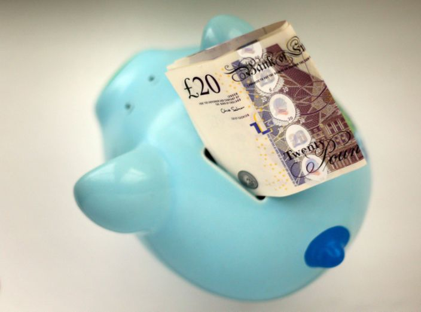

행복의 열쇠는 돈이 아니라 저축입니다
게시: 2020-01-02T06:30:02+09:00
모든 사람은 돈과 행복에 대해 나름대로의 철학이 있습니다. 크게 2가지 학파가 있지요. "근검절약해야 나중에 잘 살 수 있다" vs. "행복은 저축할 수 있는 것이 아니다, 당장 행복해야 한다." 근검절약파의 논리에 대해서는 따로 말할 필요가 없을 정도로 명약관화합니다만, 굳이 좋은 비유나 사례를 들자면 주말의 비유가 있습니다. 즉, 금요일 오후에 기분이 좋으냐 일요일 오후에 기분이 좋으냐 하는 것이지요. 금요일은 평일이라서 일하는 날이지만, 그래도 오후 3~4시 즈음 되면 기분이 좋아집니다. 아니, 대부분의 분들이 금요일 오전부터 기분이 좋습니다. 주말이 기다리고 있으니까요. 그에 비해서 일요일은 이미 즐겁게 놀고 있을 시간이지만 오후 3~4시 즈음 되면 기분이 슬슬 어두워지기 시작하지요. 월요일이 기다리고 있기 때문입니다. 이와 똑같이, 근검절약하는 삶은 당장은 힘들더라도 항상 기분이 좋습니다. 오늘보다 더 나은 내일이 기다리고 있으니까요. 그런 생각을 하면 당장 행복하기 위해 소비를 하는 것은 바보짓처럼 보입니다. 하지만 그게 또 꼭 그렇지가 않습니다. 전해 들은 이야기에 불과합니다만, 어떤 60대 정년퇴직자 부부 이야기를 알고 있습니다. 남편분은 대기업에서 부장 정도로 정년퇴직하셨대요. 당연히 어느 정도 재산도 모아놓으셨고 애들도 다 키워놓으셔서, 이제 여행이나 다니면서 느긋하게 살자고 생각하셨답니다. 그런데 원래 돈이라는 것은 아무리 많아도 (정말 백억대 부자가 아닌 다음에야) 항상 불안하거든요. 그래서 이 퇴직 부장님도 흔히 하듯이 아파트 경비원으로 취업을 하셨대요. 그것도 젊을(?) 때나 가능한 직업이라면서, 경비원으로 딱 2년만 더 일해서 약간만 더 모으고 그 다음에 세계 여행을 다니겠다고요. 그런데 그렇게 경비원 근무하시다가 (어느 동네나 있기 마련인) 악질적으로 갑질하는 아파트 주민 아주머니에게 시달리시다가 그만 뇌출혈인지 뇌졸증인지를 일으키셔서 쓰러지셨답니다. 결국 세계 여행은 물건너갔고, 퇴직 부장님은 반신불수가 되어 병상에 계시고 그 사모님도 그 병구완으로 고생 중이시라고 합니다. 젊은이들이건 중년들이건 돈을 벌고 쓰고 모으는 것에는 나름대로의 철학과 계획이 있어야 합니다. 가령 매년 유럽으로 1~2주씩 여행을 가던 젊은 친구는 이렇게 말하더군요. 이 말도 맞는 말이라고 생각합니다. "저는 30대에 보는 로마와 40대에 보는 로마가 다를 거라고 생각해요. 지금 못 보면 살아 생전에 30대의 로마는 절대 못 볼테니 아쉽쟎아요?" 하지만 그렇다고 젊을 때 저축보다는 소비에 열중하는 것이 좋다고 할 수도 없습니다. 모아놓은 돈은 사람에게 기회를 주는 것이고, 소비해서 써버린 돈은 날려버린 기회가 되어 버립니다. 그러니 지금 매년 써버리는 100만원이 10년 후에는 100*10 = 1천만원이 아니라 2천만원 혹은 1억이 될 수도 있거든요. 그러니 20~30대에 돈을 모으기보다 해마다 유럽 도시들을 하나씩 돌아보았다면, 많은 추억과 사진은 남았을지 몰라도 대신 40대에 생겼을 수도 있었던 아파트 1채가 날아가버린 것일 수도 있습니다. 제가 좋아하는 영어 숙어 중에 이런 것이 있습니다. "You cannot eat a cake and have it." 직역하면 케익은 먹으면 없어진다는 뜻인데, 즉 이것도 가지고 저것도 가질 수는 없으며 반드시 선택을 해야 한다는 뜻입니다. 밥 딜런(Bob Dylan)의 명곡 One more cup of coffee 가사 중에도, 이런 내용이 나오지요. Your daddy, he's an outlaw And a wanderer by trade He'll teach you how to pick and choose And how to throw the blade 너희 아빠는 무법자야 직업으로는 방랑을 하시지 그 분이 너에게 가르쳐 줄 것은 선택을 하는 법과 칼 던지는 법 정도야 가장 중요한 것은 how to pick and choose, 즉 인생의 여러가지 갈래길에서 선택을 하는 것입니다. 인생은 끊임없는 선택의 연속이며, 그 선택에 따라 인생은 정말 다른 방향으로 전개되어 나아갑니다. 성공적인 인생을 살기 위해서는 노력도 중요하지만 그런 갈래길에서 현명한 선택을 하는 것이 더 중요합니다. 당장의 소비로 확실한 행복을 누리느냐 아니면 불확실한 미래의 행복을 위해 저축하느냐는 많은 사람들에게 골머리를 앓게 만드는 갈래길입니다. 과연 정답이 있을까요 ? 정답인지는 모르겠습니다만 저는 소비는 조금만 하시고 저축을 많이 하시라고 권하고 싶습니다. 이유는 즐거운 소비보다는 성실한 저축이 더 행복에 도움이 되기 때문입니다. (물론 모든 것은 적당해야 합니다. 무조건 소비를 억제하고 저축만 하라는 이야기는 아닙니다.) 근검절약해서 저축을 하는 사람에게 너무 '돈돈돈 거리지 말라'고 핀잔을 하는 분들도 있습니다. 사람나고 돈 났지 돈나고 사람 난 거 아니다, 돈이란 있다가도 없고 없다가도 생기는 것이다 등등 여러가지 이야기가 있지요. 또 돈이야 한번 대박을 터뜨리면 언제든지 많이 가질 수도 있다고 생각하는 사업가, 투자가, 심지어 도박꾼도 있습니다. 무엇보다, 행복은 돈으로 살 수 없다는 진실된 명언도 있습니다. 그러나 최근 영국 금융사인 바클레이즈(Barclays)의 위탁을 받아 Centre for Economics and Business Research (CEBR)가 수행한 연구 결과에 따르면 행복은 돈의 액수에 달려있는 것이 아니라 저축이 늘어나느냐 여부에 달려 있습니다. 즉 행복은 소득액이 많으냐 적으냐에는 그렇게까지 큰 영향을 받지 않지만, 저축을 하느냐 안 하느냐에 따라서는 눈에 띄게 영향을 받는다는 것입니다. 또 다른 서베이 결과를 보면 연 소득이 5만불이 넘어서면 그 이상 돈을 많이 벌더라도 행복감에는 별 차이가 없지만, 저축액이 늘 수록 행복감에는 큰 영향을 준답니다. 늘어나는 저축액보다 행복에 더 큰 영향을 주는 요소는 딱 하나, 가족과의 좋은 관계 뿐이라고 하네요. 생각해보면 당연한 말입니다. 전에 인용했던 어떤 젊은 부자의 인생 조언에도 나옵니다만, 행복이라는 것은 돈이 많으냐 적으냐에 달려있는 것이 아니라 무언가 향상시키고 있다는 성취감에 달려 있는 것이라고 하지요. 그게 사업 실적이든 마라톤 기록이든 프랑스어 실력이든지요. 그런데 그 향상 정도가 가장 객관적으로 측정되고 또 가장 현실적으로 도움이 되는 것이 바로 저축계좌의 액수입니다. 그러니 저축액이 꾸준히 늘어나고 있다면 그 액수에 상관없이 오늘보다 나은 내일이 기다리고 있다는 뜻이니, 기분이 좋아질 수 밖에 없지요.

관심있으신 분들은 아래 원문 기사들을 읽어보시기 바랍니다. https://www.yourmoney.com/saving-banking/savings-not-income-is-the-key-to-happiness/ 소득이 아니라 저축이 행복의 열쇠이다. https://www.businessinsider.com/saving-money-could-make-you-happier-2013-11 돈으로는 행복을 살 수 없다지만, 저축으로는 살 수 있을지도 모른다. https://www.cnbc.com/2019/10/10/study-millennials-who-buy-less-and-save-more-are-happier.html 밀레니얼 세대 중 더 적게 쓰고 더 많이 저축하는 젊은이들이 더 행복하다 https://www.businessinsider.com/saving-money-could-make-you-happier-2013-11 저축하는 것이 당신을 행복하게 해줄 수 있다